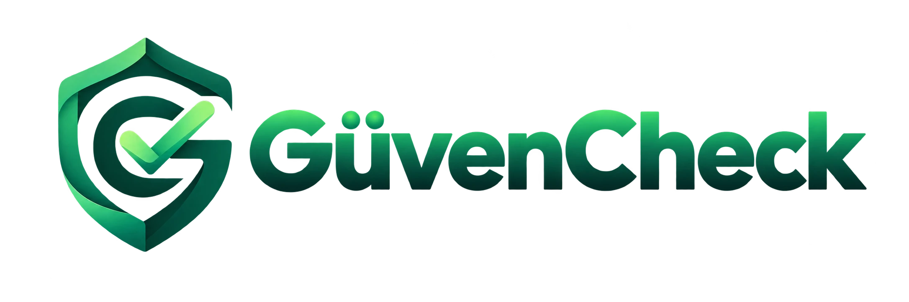

Kullanışlı
Gerçek bir probleme karşılık vermeyen ürünleri geliştirmeyi anlamlı bulmuyoruz. Ürünlerimizin insanların hayatında anlaşılır ve somut bir değer üretmesini hedefliyoruz.

Karaaslan Labs
Karaaslan Labs, gerçek dijital problemlere odaklanan AI-native bir ürün şirketidir. Teknolojiyi amaç değil, insanların işine yarayan sade ve güvenilir ürünler geliştirmek için bir araç olarak kullanıyoruz.
Ne üretiyoruz
Gerçek bir probleme karşılık vermeyen ürünleri geliştirmeyi anlamlı bulmuyoruz. Ürünlerimizin insanların hayatında anlaşılır ve somut bir değer üretmesini hedefliyoruz.
Güvenlik, açıklık ve tutarlılığı ürün deneyiminin bir parçası olarak görüyoruz. Kullanıcının aldığı sonuca ve kullandığı ürüne güvenebilmesi bizim için temel bir ürün kriteridir.
Tek seferlik çözümler yerine tekrar kullanılabilen ve daha fazla kullanıcıya sürdürülebilir biçimde ulaşabilen ürünler geliştiriyoruz.
Güncel ürün

GüvenCheck, karşılaştığınız dijital içeriklerin güvenilirliği ve olası riskleri hakkında daha bilinçli karar vermenize yardımcı olmak için geliştirilen Karaaslan Labs ürünüdür. Mesaj, bağlantı, internet sitesi ve görsel içerikleri değerlendirerek riskleri, nedenlerini ve izlenebilecek adımları daha anlaşılır hale getirmeyi amaçlar.
GüvenCheck’i Keşfet


Karaaslan Labs
Kaynakları yalnızca ucuz olanı seçmek için değil, gerçekten değer yaratan noktalara yönlendirmek için kullanıyoruz. Gereksiz maliyetten kaçınırken ürün kalitesinden ve güvenilirlikten ödün vermiyoruz.
Bir problemi çözmek için ihtiyaç duyulmayan sistemleri ve özellikleri erkenden eklemiyoruz. Ürünü ancak gerçek ihtiyaç ortaya çıktığında daha karmaşık hale getiriyoruz.
Önce gerçek kullanıcılarla ürünün değer ürettiğini ve doğru problemi çözdüğünü anlamaya çalışıyoruz. Büyümeyi, elde edilen kanıtların üzerine kuruyoruz.
Karaaslan Labs
Karaaslan Labs, kullanışlı, güvenilir ve ölçeklenebilir dijital ürünler geliştiren AI-native bir ürün şirketidir.
Kendimizi tek bir ürüne, sektöre veya teknoloji trendine göre tanımlamıyoruz. Gerçek dijital problemleri belirleyerek onları sade, anlamlı ve sürdürülebilir ürünlere dönüştürmeye odaklanıyoruz.
AI ve otomasyonu, daha fazla teknoloji kullanmak için değil; daha iyi ürünler geliştirmek, daha hızlı öğrenmek ve küçük bir ekibin yüksek üretim kapasitesine ulaşmasını sağlamak için kullanıyoruz.
Karaaslan Labs